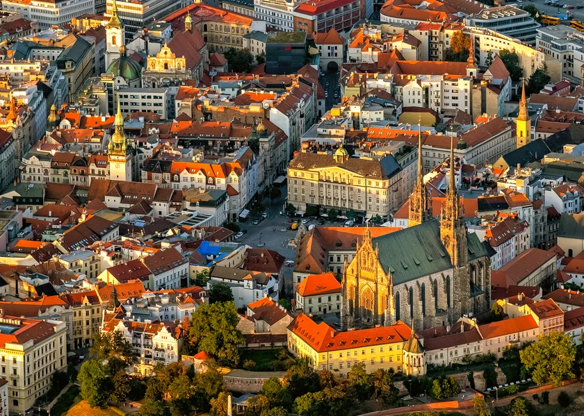
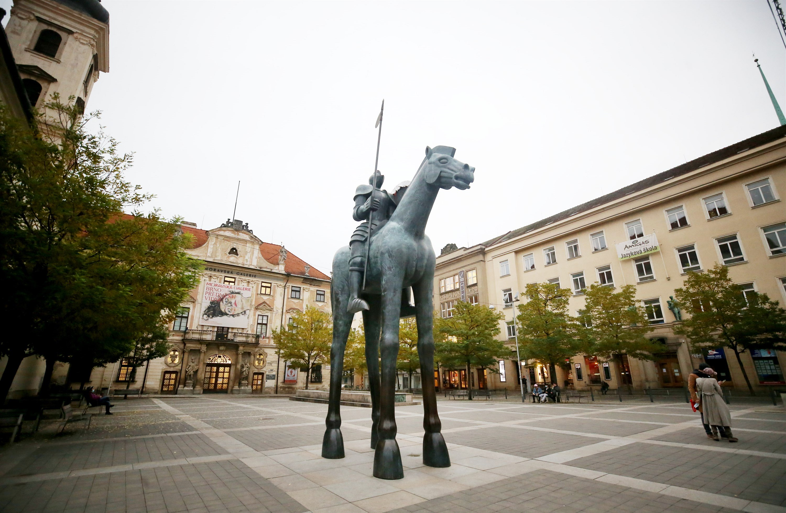
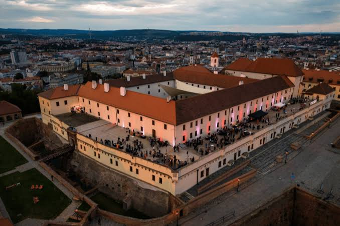
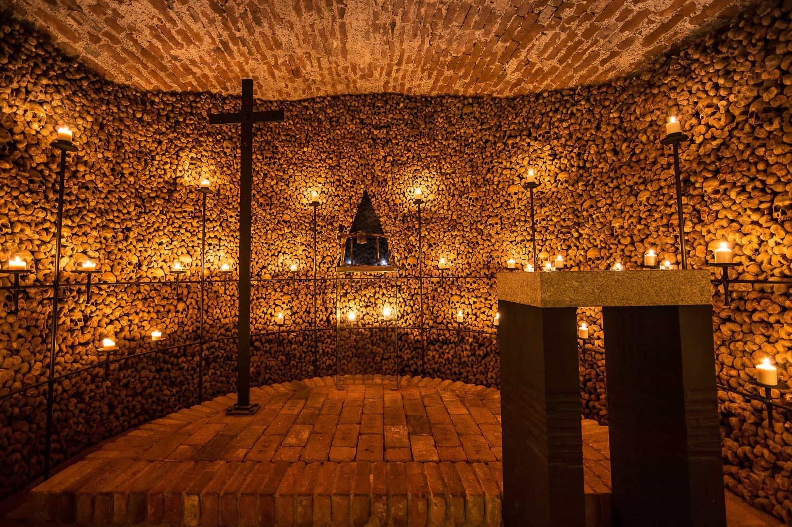

The second-largest city in Czechia, known for its historic centre, lively atmosphere, moder culture and unique underground spaces.
Brno is the largest city in Moravia and an important cultural and university centre. Its historic centre combines old buildings, lively squares and modern cafés and restaurants.
The city has a different amosphere from Prague and is a great place to explore on foot. Visitors can discover historic landmarks as well as modern parts of the city.

Špilberk Castle stands on a hill above the centre of Brno and is one of the city's most important landmarks. The castle was built in the 13th century and later became a fortress and prison.
Today, visitors can explore the castle grounds, museum exhibitions and viewpoints overlooking Brno.

The historic underground beneath Brno's centre contains cellars, tunnels and other preserved spaces hidden below the streets.
Visitors can explore parts of the undeground and discover another side of the city's history. The underground spaces show how the centre of Brno developed over the centuries.

Brno offers many places to explore, from historic squares and churches to castles, museums and modern cafés. Visitors can walk through the city centre and discover its different neighbourhoods.
The combination of history, student life and modern culture makes Brno one of the most interesting cities to visit in Czechia.